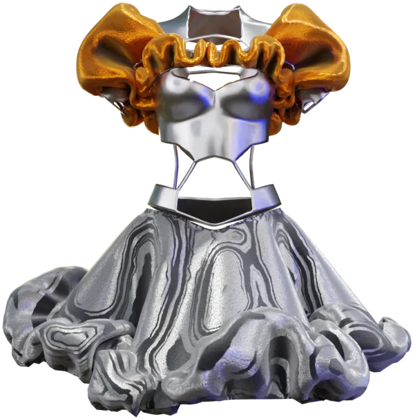
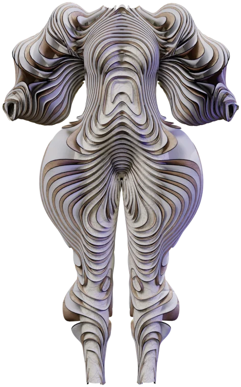
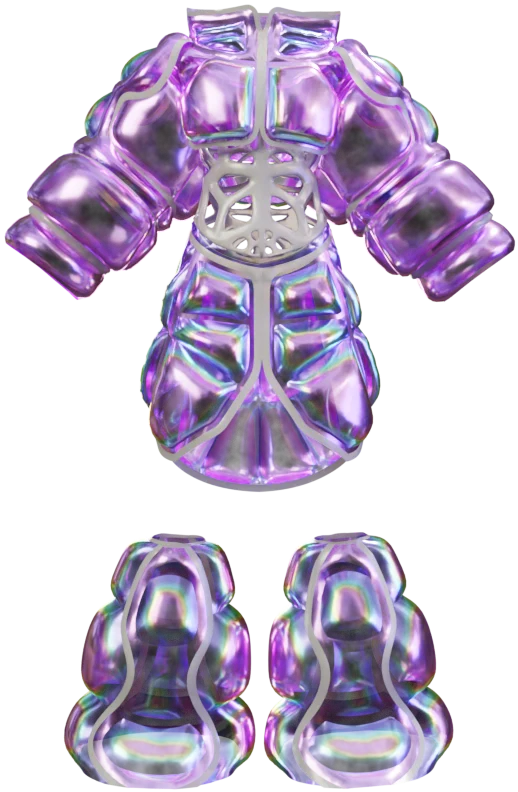
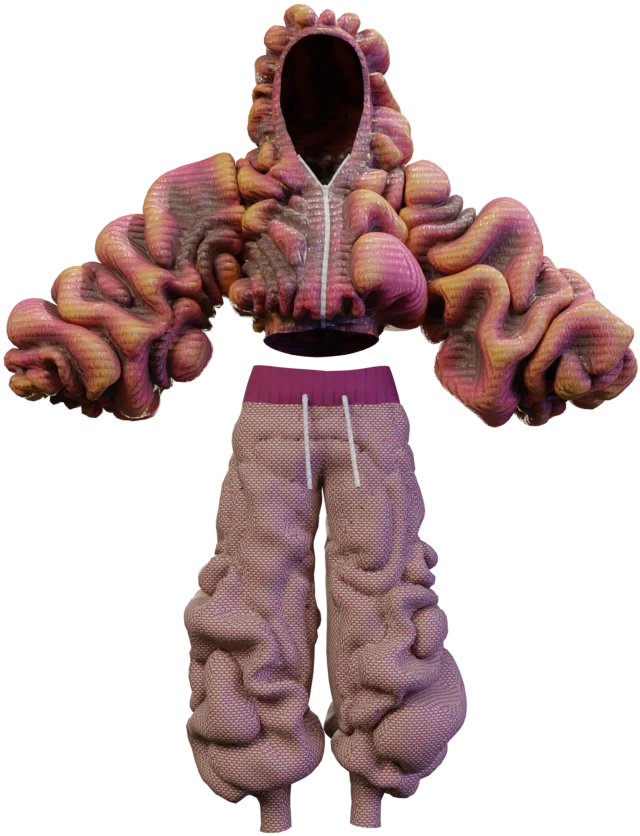
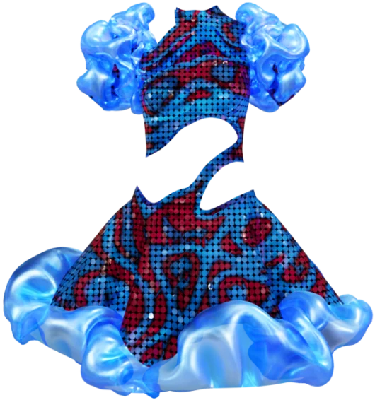

Morphellumcouture without fabric.
Garments that could never be sewn. Sculpted in 3D, simulated like cloth and dropped on DressX as wearable collectibles.
DressX / Digital Couture · 2023
Built by ILLUSORR
Scroll to enter

Silver Ruffle

Rainbow Puffer

Op-Art Suit

Iridescent Set

Rose Puffer

Sticker Hoodie

Ruffle Tartan

Marble Kimono